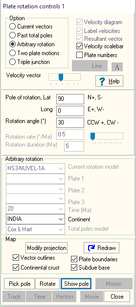

Arbitrary Plate Rotations
 Open with Plate rotation button on main
MICRODEM toolbar.
Open with Plate rotation button on main
MICRODEM toolbar.
Option lets you experiment with moving a plate around on the surface of the earth.

- Pick Arbitrary rotation radio button in options radio group box on top of form.
- Pick continent to rotate in bottom group of combo boxes.
- Set pole with its lat, long, and angular rotation angle in the edit boxes in the middle of the form.
- Slider bar lets you move rapidly about the pole, changing the rotation angle.
- Rotate button show the rotated position.
- Pick Pole button lets you graphically select a pole on the map by double clicking and then will rotate the plate by the rotation angle in the form.